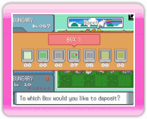
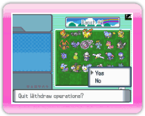
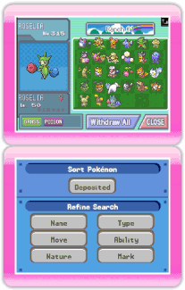

|
14
|
Withdraw
Pokémon
|
 |
|
Before you withdraw Pokémon from the Ranch, please read "12. Connect to DS."
 DS
screen Select Pokémon you want to withdraw from the Ranch to
your Nintendo DS. When you select "WITHDRAW," a message pops up, "To
which Box would you like to deposit?" Once you select a box, you can
withdraw Pokémon into that box.  DS screen Once you finish withdrawing Pokémon, select "Close." A message pops up, "Quit Withdraw operations?" Select "Yes" to go back to the DS main menu.
If the screen displays the message,
"Turning off the power." Press  DS screens When you withdraw Pokémon from the Ranch, you can sort the Pokémon you want to withdraw or refine your search on the lower screen of the DS Touch Screen. You can sort or refine Pokémon you chose by another section.
* To start, Pokémon are in order by "Deposited." By selecting "Deposited," you can choose a different section for sorting.
Caution!
|


 to exit.
to exit. |
 |
 |